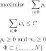
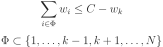

实现方法
| 文章分类: | Implementation |
|---|---|
| 创建时间: | 2015年11月 |
基本程序结构
程序结构中最基本的三板斧：顺序结构、循环结构、分支和跳转结构（if-else）。
顺序结构简单且确定性最好。顺序结构存在顺序可以互换的情况，比如计算产量，能力变量和时间变量的计算没有前后关系，这便给并行计算留下了空间。
循环结构包括初始化、循环体和退出条件三个部分。数据结构是二维数组，通常需要两重循环，但也可以用单循环遍历。递归也是种循环，但与以for为代表的程序语言中循环感觉上不同，更深奥（deep）。递归通常可以用复杂些的循环代替，特别是尾递归可直接替换。尾递归是尾调用的特殊形式，函数的最后一个表达式是调用一个函数。递归结构符合人的逻辑思维方式，问题是对内存空间的需求大，且参数入栈和出栈会降低算法的效率。
分支和跳转结构适用于选择和判断的情景。过长过多的分支结构是软件工程中的不良结构，违背OCP原则（开放、封闭原则）。函数表结构常常可用以避免多分支结构。通过精心设计避免分支和跳转在算法结构中总是受欢迎的。
常用数据结构
数据结构的重点是数据的逻辑关系，包括线性结构、关联结构（如集合、映射）、树形结构、图形结构，等等。
数据结构也需要积累，掌握的越多，算法设计的灵活性就越大。对于算法设计而言，数据结构最关键的是其特性和接口，至于数据结构怎么实现，不是算法设计必需的。
线性表
线性表是最简单的基本数据结构，特点是数据元素之间没有关系，常见的包括数组（array）、链表（list）、栈（stack）、队列（queue）等。
数组存储在连续区域，通过下标直接访问元素，可插入、删除、查找。数组的访问开销很小，但插入和删除开销较大，不适合插入和删除操作频繁的场合。数组查找的复杂度是，如果是有序数组，可用二分法，复杂度降低为。
- 统计取值范围在 [1,100] 的数字出现的次数，设计为 100 个元素的数组，下标对应数字，数组元素对应次数。
链表适用线性表长度不能确定的情况。每个节点的数据都由两个域组成，一个存放数据，一个存放指针。单项链表指针只有后向指针，双向链表指针有前向指针和后向指针。链表的插入和删除只需修改指针指向，因此插入和删除操作效率高，但访问的效率低，需沿链表前向或后向搜索，查找操作的复杂度是。
- 为免麻烦，头节点链表通常用没有数据域，只有指针域的特殊节点做固定头节点，称为表头节点、哑节点（dummy node）或哨兵节点。
栈是特殊线性表，其插入和删除操作分别称为“入栈”和“出栈”。其实栈不是数据结构，而是数据的管理逻辑，遵循后进先出（last in first out）原则，因此有数组栈和链表栈之分。利用栈的特性，可以将算法的递归实现转变成非递归实现。
队列也是特殊线性标，只能在一端插入数据，另一端删除数据。入队一端称为后端（rear），出队一端称为前端（front）。队列也是数据的管理逻辑，遵循先进先出（first in last out）原则。队列还有其他形式，比如环形队列、两端都执行入队和出队操作的双端队列（double-ended queue）、数据元素有优先级标签的优先级队列（priority queue），等等。
复杂结构
复杂结构的特点是数据元素之间存在关系，因此插入和删除操作不仅要对数据元素进行操作，还要维护数据元素之间的关系。
树（tree）
树是具有层级结构的数据结构，每个节点有 0 个或多个子节点，但最多只有一个父节点。
- 度，子节点个数；
- 根节点，父节点为空的节点。
- 叶节点，度为0的节点。
- 兄节点，相同父节点的节点。
- 高度，树的层级。
根据每个节点的子节点数，可将树分为二叉树和多叉树。
二叉树的节点树不超过两个。有序的二叉树称为二叉查找树（binary search tree）或二叉排序树（binary sort tree）。相对于普通二叉树，二叉查找树的特点是左节点的值都小于其根节点的值，而右节点的值都大于其根节点的值。二叉查找树的所有新插入节点都是叶节点，已存在的节点位置固定。二叉查找树的时间复杂度是，但如果构造的二叉树退化成链表形的单支树，则时间复杂度就会变成。因此需要二叉查找树具有自平衡功能，保证二叉树始终是一棵平衡树。AVL树和红黑树就是自平衡二叉查找树。
B树，及其变形树是典型的多叉树。B树是自平衡多叉查找树。M阶B树的每个非终端节点至少有M/2个子树，但最多M个子树。根节点如果不是终端节点，则至少有2个子树。每个节点有N个关键字，所有终端节点都在相同的层级。B+树与B树的区别在于B+树的所有终端节点包含了全部关键字信息，以及这些关键字所在节点的指针，从而将终端节点按关键字的大小排成有序链。因此对B+树的搜索可以按关键字大小顺序进行，也可以从根节点开始。B树常用于操作系统和数据库系统，适合多路分支且有序的层次结构。
区间树是以区间为数据元素的红黑树。区间树的每个节点都表示一个区间，其关键字是区间的左端点。区间树的查找不是精确查找，而是确定节点区间是否与查找区间存在重叠。区间树支持获取子树的最大右端点值，从而可以根据所查找区间的左端点判断区间是否重叠，如无则转到下一个搜索节点。
线段树也是以区间为数据元素的二叉查找树，与区间树的区别是线段树的每个非叶子节点表示的区间范围是其子节点的区间范围之和。
堆是一种二叉完全树，用不完全的排序来储存节点（partial order），只要求父节点的值大于子节点的值，不对子节点之间做要求。完全树中，一层的节点是从左向右填满的。
字符串问题可能用到字典树，如前缀树、后缀树等。
集合（set）
集合中的元素具有无序性、互异性和确定性。集合的特点是除了插入、删除等操作外，还有集合运算，如交、并、差等。
哈希表（hash）
哈希表，类似映射（map），是通过关键字（key）直接访问元素的值（value）。用映射关系实现的哈希表的数据插入、删除和查找的时间复杂度都是；用红黑树实现的哈希表的时间复杂度是，所以通常哈希表都是用映射关系实现，否则效果与二叉树、有序数组差别不大。
图（graph）
图不仅储存数据元素，还储存元素间的复杂关系。图由顶点和连接顶点的边组成，顶点描述数据元素，边描述元素间的关系。
根据边是否有方向可分为有向图和无向图；根据任意两顶点间边的个数，可分为简单图和多重图；根据任意两顶点的连通性，可分为连通图和非连通图；根据边的地位平等性，可分为带权图和无权图。不论那种方式，图的基本定义方式只有两种，二元组定义和三元组定义。对于图G，如V(G)表示顶点集，E(G)表示边集合，则(V,E)就是图的二元组定义，如果存在关联函数I将E的每条边映射到V的两个顶点，即I(e)=(u,v)，则(V,E,I)就是图的三元组定义。
图的存储通常采用邻接矩阵（二维数组）和邻接表（链表或可变长数组），有向图有时也此啊用十字链表存储。图的遍历是图操作的基础，常用策略包括深度优先搜索（DFS）和广度优先搜索（BFS）。
深度优先搜索：从图G的某个顶点v出发，先访问v，然后选择一个与v相邻且没被访问过的顶点vi，从vi出发，依次遍历。当到达某个顶点的邻接顶点均已访问时，再退回到已访问顶点中，最后一个拥有未被访问邻接顶点的顶点，继续遍历，直到所有顶点均被访问。

广度优先搜索：从图G的某个顶点v出发，依次访问与v相邻且没被访问过的顶点vi，然后从v1开始，依次访问与v1相邻且没访问过的顶点，以此类推，直到所有节点都被访问过。

典型算法模式
最优解的模型通常体现了最优解的子问题的分解结构和堆叠方式。
贪婪法
贪婪法（greedy algorithm）的求解过程本身就包含了子问题分解过程。算法每个步骤（step）都选择当前的最优选择，直至找到满足条件的第一个组合。想像的出这样的得到的结果通常不会最优，但在对最优要求不那么严格，有个解是最优先需求的情况下，贪婪法最合适。
比如需要找零31分，硬币有25分、20分、10分、5分、1分四种。运用贪婪法，第一次选择的是25分，第二次是5分，第四次是1分。虽然20、10、1是同效解，但贪婪法不会得到这个解。
背包问题（knapsack problem）是NP完全问题：有 N 件物品和承重为 C 的背包，每件物品的重量是，价值是。求解哪几件物品装入背包可使总重不超过 C 的情况下价值最大。

因为隐含条件每种物品只有一个，对于物品而言，只能选择0或1，所以也称为0-1背包问题。
贪婪法在运算中的特点是每次运算面对的问题本质上相同，只是规模不同。比如背包问题，第一次选择了 k 物品，则第二次选择时的问题约束转变为：

在上述模型描述下，贪婪法处理该问题时仍然存在策略选择问题。第一种策略是根据物品价值选择，每次选最贵的；第二种是根据物品重量选，每次选最轻的；第三种是设计价重比（价值密度）指标，每次选价重比最高的。
- 定义物品的数据结构
- 定义背包问题的数据结构
- 定义数据的处理程序（主程序）
- 定义选择策略（三个）
分治法
分治法（divide and conquer）是将问题分解成一系列相互独立且规模较小的相同问题，规模依旧大的继续用相同策略分解，直至所有小问题都可解决。通过分解问题，可以实现两个目的，一是将没法解决的大问题变成可以解决的小问题，二是降低解决问题的复杂度。分治法是最适合程序语言的技巧，因此应用广泛。

分治法的难点是分解和合并的设计。能用数学归纳法证明的问题，都可以用分治法解决，这也是选择分治法的信号。
动态规划
动态规划（dynamic programming）
穷举法
穷举法（enumeration）